Camarón cristal marinado en limón acompañado de pepino blanco, cebolla morada fileteada, cilantro, aguacate y nuestra salsa de aguachile y Chiltepin.
Plato Regular (250g): $220
Plato Grande (350g): $300
Plato Familiar (500g): $400
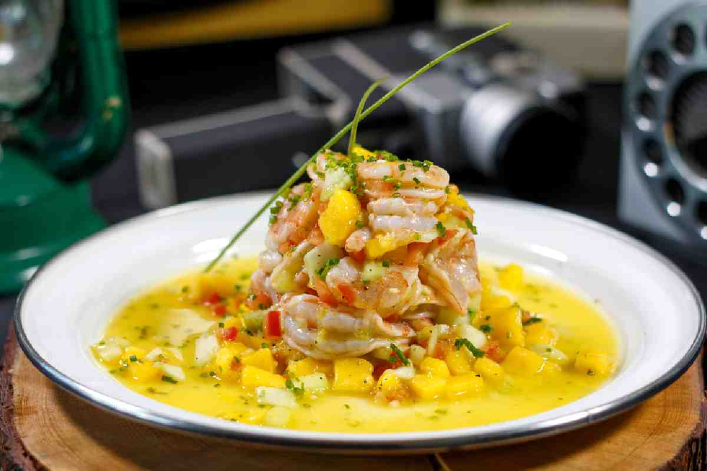
AGUACHILE MANGO HABANERO
Camarón curtido en jugo de limón con salsa de mango habanero acompañado de aguacate, cebolla morada, brotes de cilantro.
Plato Regular (250g): $220
Plato Grande (350g): $300
Plato Familiar (500g): $400
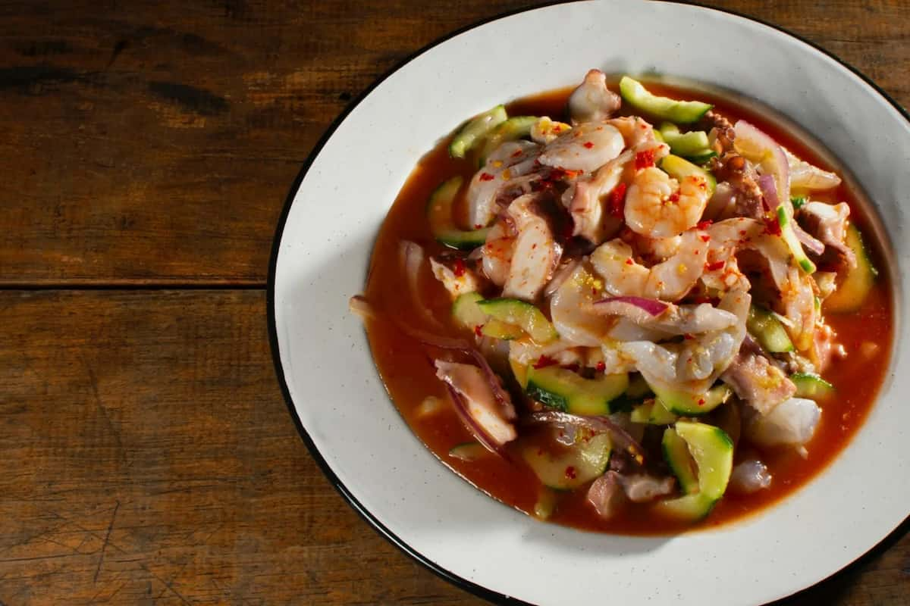
AGUACHILE ROJO ESTILO PACÍFICO
Camarones marinados en limón acompañado de pepino blanco, cebolla morada fileteada, cilantro, aguacate y nuestra salsa de chiles rojos.
Plato Regular (250g): $220
Plato Grande (350g): $300
Plato Familiar (500g): $400
ESPECIALIDADES DE LA CASA
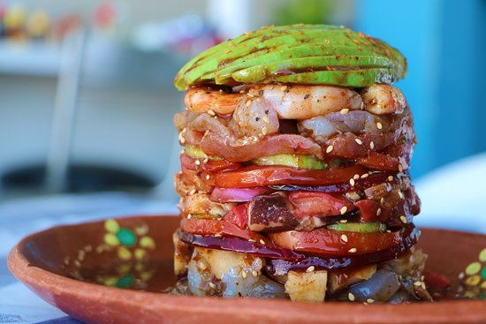
GRAN TORRE DE MARISCOS
Camarones, atún, reviche de pescado, pulpo, aguacate, pepino, cebolla, camarones empanizados bañados en nuestra salsa especial.
Tamaño Mediano (400g): $320
Tamaño Grande (600g): $420
Tamaño Familiar (800g): $520
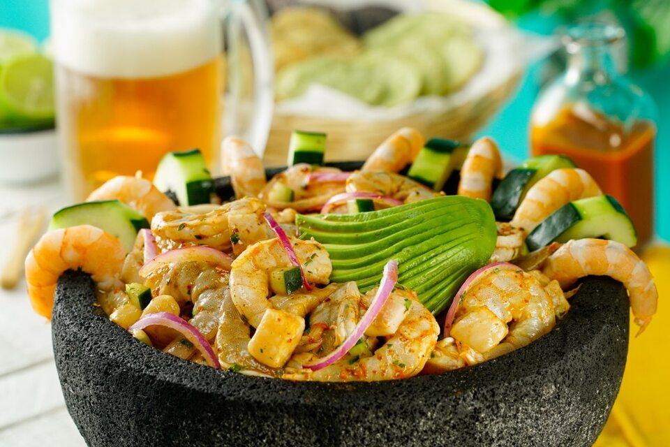
MOJAJETE DE MARISCOS ESTILO LOS MOCHIS
Mokajete con deliciosos camarones, pulpo, pescado, calamar, bañados en salsa de chilepin tatemado, piña, cebolla, pepino, aguacate acompañado de tostadas.
Tamaño Mediano (450g): $350
Tamaño Grande (550g): $440
Tamaño Familiar (700g): $550
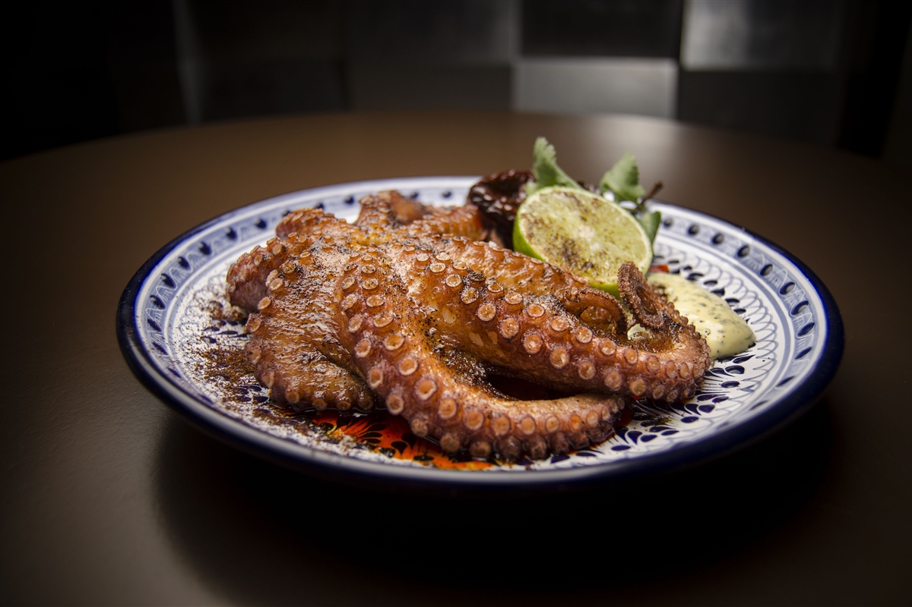
PULPO CORAZÓN DEL MAR
Estrella de pulpo rostizado con nuestra receta especial, acompañado de papas y vegetales.
Plato Regular (250g): $250
Plato Grande (350g): $330
Plato Especial (450g): $400
PESCADOS A LA PLANCHA
FILETE A LA PLANCHA
Filete del día sal pimientado y cocinado en nuestra plancha, acompañado de arroz y ensalada de la casa.
Plato Regular (200g): $180
Plato Grande (300g): $240
Plato Especial (400g): $300
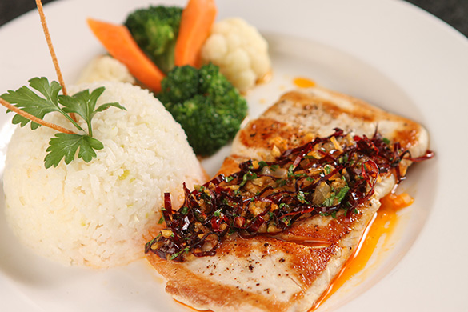
FILETE AL MOJO DE AJO
Filete del día salteado con mantequilla y ajo dorado, acompañado de arroz y ensalada de la casa.
Plato Regular (200g): $180
Plato Grande (300g): $240
Plato Especial (400g): $300
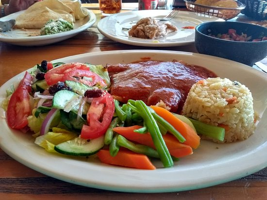
FILETE A LA DIABLA
Filete salteado con cebollas fileteadas y bañado en salsa diabla, acompañado de arroz y ensalada de la casa.
Plato Regular (200g): $180
Plato Grande (300g): $240
Plato Especial (400g): $300
ESPECIALIDADES DE ATÚN
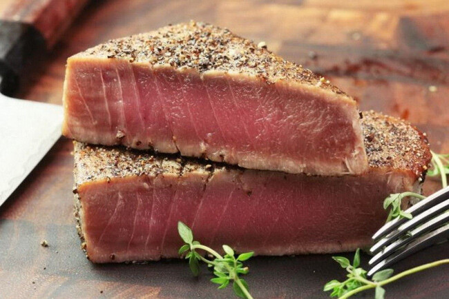
MEDALLÓN DE ATÚN SELLADO
Delicioso medallón de atún sal pimientado y cocinado en nuestra plancha, acompañado de puré de camote.
Plato Regular (200g): $280
Plato Grande (300g): $380
Plato Especial (400g): $480
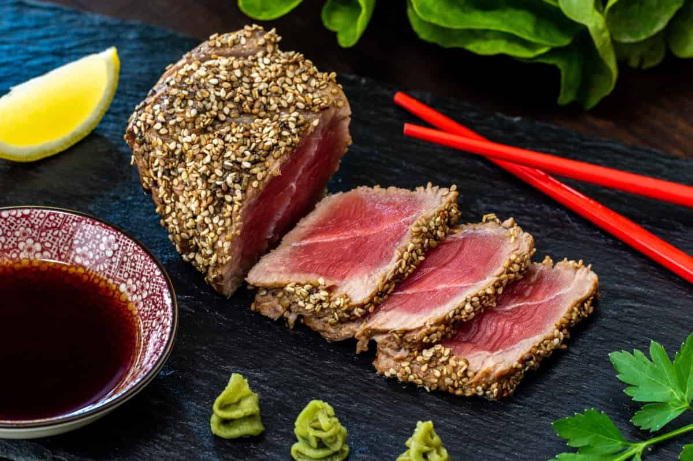
MEDALLÓN DE ATÚN EN COSTRA DE AJONJOLI
Medallón de Atún en costra de ajonjoli y miel de agave, acompañado de ensalada de la casa y arroz.
Plato Regular (200g): $300
Plato Grande (300g): $400
Plato Especial (400g): $500
ESPECIALIDADES DE CAMARÓN
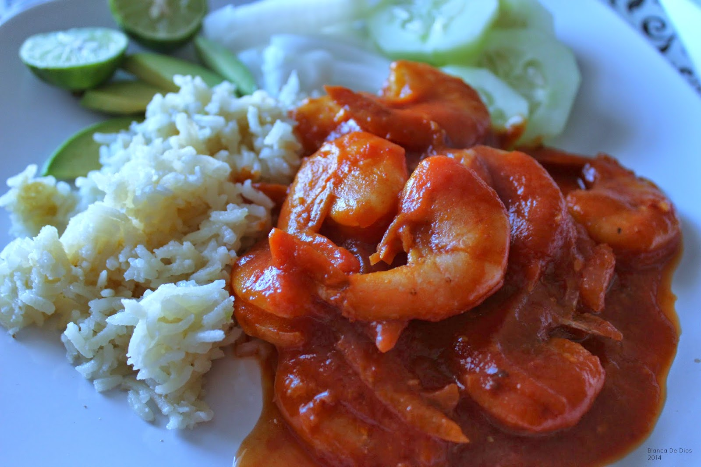
CAMARONES A LA DIABLA
Camarones salteados con cebollas fileteadas con salsa de chipotle adobado, acompañados de puré y chips de camote.
Plato Regular (180g): $200
Plato Grande (280g): $280
Plato Especial (380g): $360
CAMARONES AL MOJO DE AJO
Camarones tradicionales salteados con mantequilla y ajo dorado, acompañados de puré y chips de camote.
Plato Regular (180g): $200
Plato Grande (280g): $280
Plato Especial (380g): $360
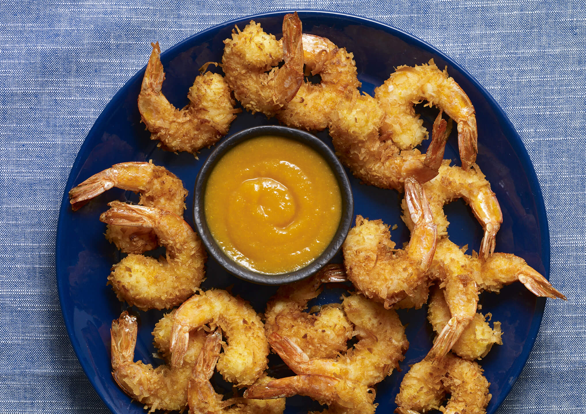
CAMARONES TEMPURA COCO
Ricos Camarones tempura capeados con coco rayado acompañados de salsa de Mango o Tamarindo.
Plato Regular (180g): $220
Plato Grande (280g): $300
Plato Especial (380g): $380
ESPECIALIDADES DE PULPO
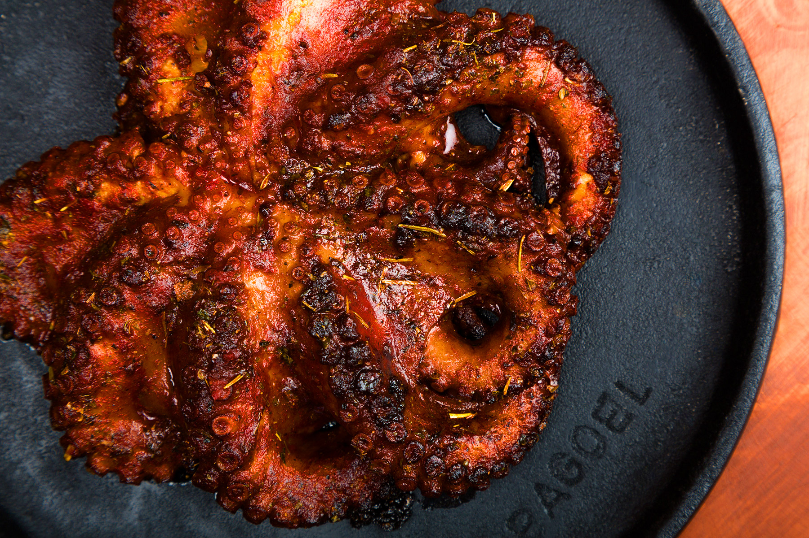
PULPO A LAS BRASAS
Pulpo sazonado y zarandeado lentamente, acompañado de pure de papa y espárragos a la mantequilla.
Plato Regular (200g): $280
Plato Grande (300g): $380
Plato Especial (400g): $480
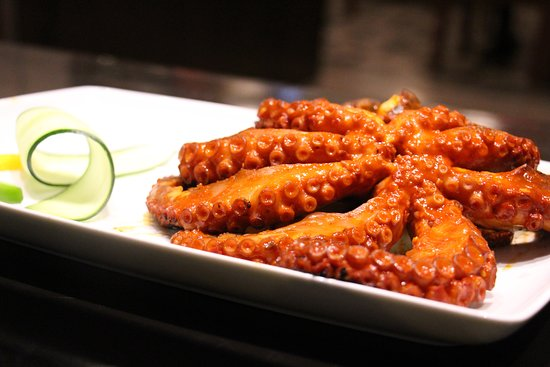
PULPO AL PASTOR
Pulpo marinado en nuestra tradicional salsa al pastor, piña y cebolla, acompañado de pure de papa.
Plato Regular (200g): $280
Plato Grande (300g): $380
Plato Especial (400g): $480
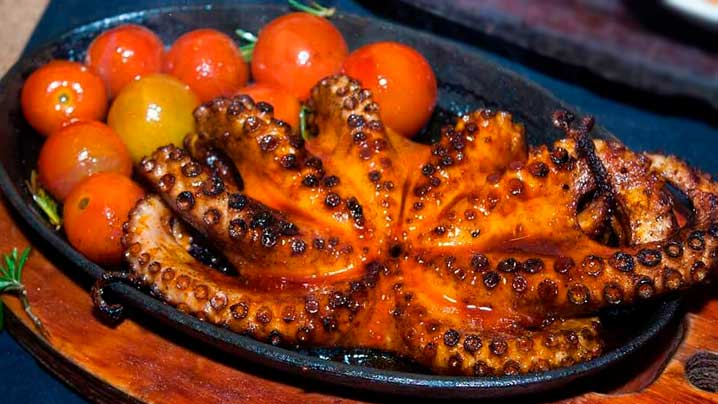
PULPO ZARANDEADO
Uno de los Favoritos de nuestros invitados por su exquisita salsa y cebolla frita al grill.